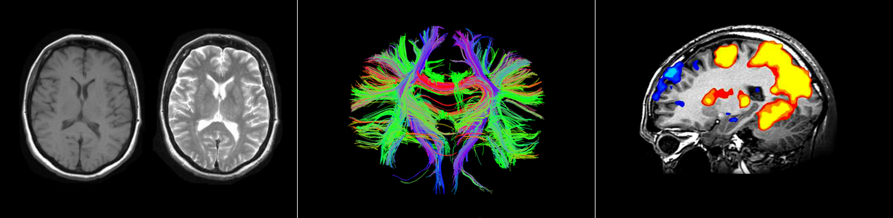

메뉴
neurogazer
연구참여
SERVICE
BRAIN INFORMATION
for better life
INTRODUCTION
너무나 중요하지만
너무나 알 수 없었던
당신의 뇌에 대한
정보를 제공합니다.
뉴로게이저는 세계적인 뇌과학자들의 연구결과를
바탕으로,뇌의 성장 발달, 학습준비 상태, 적성, 재능,
성향, 스트레스 그리고 노화에 이르기까지
그동안 알지 못했던 뇌에 대한 정보를 연령에 맞춰
제공합니다.

SERVICE BY SPECIFIC AGES
정확한 측정과 분석을 통해
보다 정확하게 이해하고
관리하게 됩니다.
아이부터 노인까지, 연령별로 꼭 필요한
정보를 제공합니다.
연령별로 신체적 특징이 달라지듯, 뇌 역시 연령별로
서로 다른 특징들을 보이게 됩니다. 이러한 뇌의 특징 및
상태를 반영하여, 5세~20세, 21~60세, 61세 이상,
3 그룹으로 나누어 각각의 그룹에 적합한 뇌 분석 정보를
제공하게 됩니다.
5세~20세
뇌가 빠르게 성장하는 시기로,
내 성장 및 발달 상태, 학습준비 상태,
적성, 재능, 성향 등과 관련된
뇌 측정과 분석 정보를 제공합니다.
(2018년 서비스 예정)
21세~60세
뇌 성장보다는 관리가 중요한 시기로,
뇌 상태, 스트레스, 적성, 성향 등과
관련된 뇌 측정과 분석정보를
제공합니다.
(2020년 서비스 예정)
60세 이상
뇌의 노화가 본격화되는 시기로,
뇌 노화 상태 및 진행 정도,
기억력, 성향 등과 관련된
뇌 측정과 분석정보를 제공합니다.
(2019년 서비스 예정)
MRI Scanner
MRI Scanner를 이용한 뇌 측정 -
첨단의 기술은 안전하고 정확한
서비스의 시작입니다.
MRI 스캐너는 세계적으로 뇌과학 및 의료분야 등에서
활발히 사용 중인 가장 안전하고 정확한 측정 장비입니다.
이러한 MRI를 통해 가장 정확하게 뇌를 측정합니다.
ARTIFICIAL NTELLIGENCE
AI(인공지능)에 의한 뇌 분석-
복잡하고 방대한 뇌 측정 데이타를
AI를 활용하여 분석합니다.